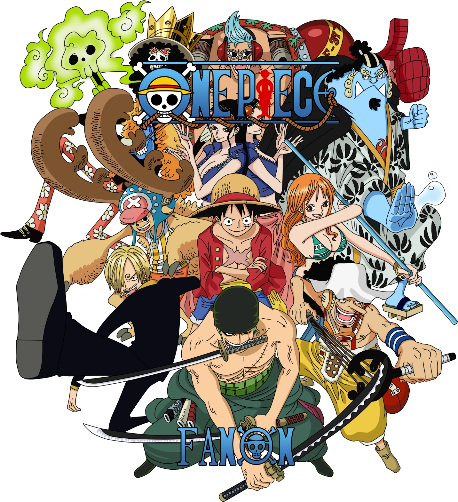

One Piece
One Piece (stylized in all caps) is a Japanese manga series written and illustrated by Eiichiro Oda. It has
been serialized in Shueisha's shōnen manga magazine Weekly Shōnen Jump since July 1997, with its individual chapters compiled
into 105 tankōbon volumes as of March 2023. The story follows the adventures of Monkey D. Luffy, a boy whose body gained the
properties of rubber after unintentionally eating a Devil Fruit. With his pirate crew, the Straw Hat Pirates, Luffy explores
the Grand Line in search of the deceased King of the Pirates Gol D. Roger's ultimate treasure known as the "One Piece" in order
to become the next King of the Pirates.
Plot
The series focuses on Monkey D. Luffy, a young man made of rubber, who, inspired by his childhood idol, the powerful pirate
Red-Haired Shanks, sets off on a journey from the East Blue Sea to find the mythical treasure, the One Piece, and proclaim himself
the King of the Pirates. In an effort to organize his own crew, the Straw Hat Pirates,[Jp 1] Luffy rescues and befriends a pirate hunter
and swordsman named Roronoa Zoro, and they head off in search of the titular treasure. They are joined in their journey by Nami, a money-obsessed
thief and navigator; Usopp, a sniper and compulsive liar; and Sanji, an amorous but chivalrous cook. They acquire a ship, the Going Merry,[Jp 2]
and engage in confrontations with notorious pirates of the East Blue. As Luffy and his crew set out on their adventures, others join the crew later
in the series, including Tony Tony Chopper, an anthropomorphized reindeer doctor; Nico Robin, an archaeologist and former Baroque Works assassin; Franky,
a cyborg shipwright; Brook, a skeleton musician and swordsman; and Jimbei, a fish-man helmsman and former member of the Seven Warlords of the Sea. Once the
Going Merry is damaged beyond repair, Franky builds the Straw Hat Pirates a new ship, the Thousand Sunny,[Jp 3] Together, they encounter other pirates, bounty hunters,
criminal organizations, revolutionaries, secret agents, and soldiers of the corrupt World Government, and various other friends and foes, as they sail the seas in pursuit of their dreams.
Characters
𝐌𝐨𝐧𝐤𝐞𝐲 𝐃. 𝐋𝐮𝐟𝐟𝐲, is the protagonist in One Piece and captain of the increasingly infamous and powerful Straw Hat Pirates. He ate the Gum-Gum Devil Fruit that changed his body to rubber. His dream is to find the legendary One Piece and become Pirate King.
He has made quite a name for himself around the world and has a bounty on his head to match - 1,500,000,000 Berries.
Despite his naive attitude, he is an amazing leader who the Straw Hats follow with pride.
𝐑𝐨𝐫𝐨𝐧𝐨𝐚 𝐙𝐨𝐫𝐨 is the swordsman, first member and Vice Captain of the Straw Hat Pirates. He uses the Santoryu-style (Three Sword Style) of sword combat and aims to become the world's greatest swordsman.
He has a bounty of 1,111,000,000 berries and is one of the eleven supernova rookies of the 'Worst Generation' of pirates.
𝐔𝐬𝐬𝐨𝐩, is the sniper of the Straw Hat Pirates who is famous for frequently lying. He wants to be a great warrior of the sea.
𝐂𝐚𝐭 𝐁𝐮𝐫𝐠𝐥𝐚𝐫 𝐍𝐚𝐦𝐢, is the navigator of the Straw Hat Pirates and a skilled cartographer.
She's a lover of money and mikans who dreams of making a map of the world. She currently has a bounty of 66,000,000 beri.
𝐕𝐢𝐧𝐬𝐦𝐨𝐤𝐞 𝐒𝐚𝐧𝐣𝐢, is the cook of the Straw Hat Pirates and lover of all things women. His dream is to find the All Blue of the sea.
His bounty is currently 330,000,000 beri.
𝐍𝐢𝐜𝐨 𝐫𝐨𝐛𝐢𝐧, is the archaeologist of the Straw Hat Pirates, who has the powers of the Bloom-Bloom Devil Fruit. Once an officer of the evil Baroque Works Organization,
Robin left them and joined the Straw Hats. She currently has a bounty 130,000,000 beri.
𝐓𝐨𝐧𝐲 𝐓𝐨𝐧𝐲 𝐂𝐡𝐨𝐩𝐩𝐞𝐫, is the doctor of the Straw Hat Pirates. He was a normal reindeer until he ate the Human-Human Fruit,
which allows him to talk and transform.
𝐂𝐲𝐛𝐨𝐫𝐠 𝐅𝐫𝐚𝐧𝐤𝐲, Franky is the shipwright of the Straw Hat Pirates and a self-made cyborg. He built the Thousand Sunny.
He is a former disciple of Tom, a fishman shipwright who built the Oro Jackson (Gol D. Roger's ship) using the wood of the Treasure Tree Adam.
His real name is Cutty Flam.
𝐁𝐫𝐨𝐨𝐤, "Soul King" Brook is a member of the Straw Hat Pirates, serving as their musician. He is a Devil Fruit user who ate the Yomi Yomo no Mi (Revive-Revive Fruit), and is undead,
having died and return to life in a pseudo-immortal state because of the fruit.
fo more information just visit: One Piece😁